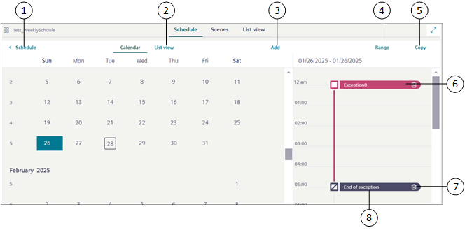

Exceptions Workspace
You can define exceptions from the Calendar view or List view.

Item | Name | Description |
1 | Schedule | Navigates back to the Schedule workspace. |
2 | List view | Displays the schedule exception entries in the List view. |
3 | Add | Displays the list of exceptions that you can add to the schedule. You can add the following types of exceptions: |
4 | Range | Allows you to convert an exception entry type from Date to Date range. |
5 | Copy | Copies an exception entry to other days of the week. |
6 | Exception | Displays the details of the exception entry. |
7 | | Deletes an exception entry. |
8 | End of exception | Displays the end of exception time. |